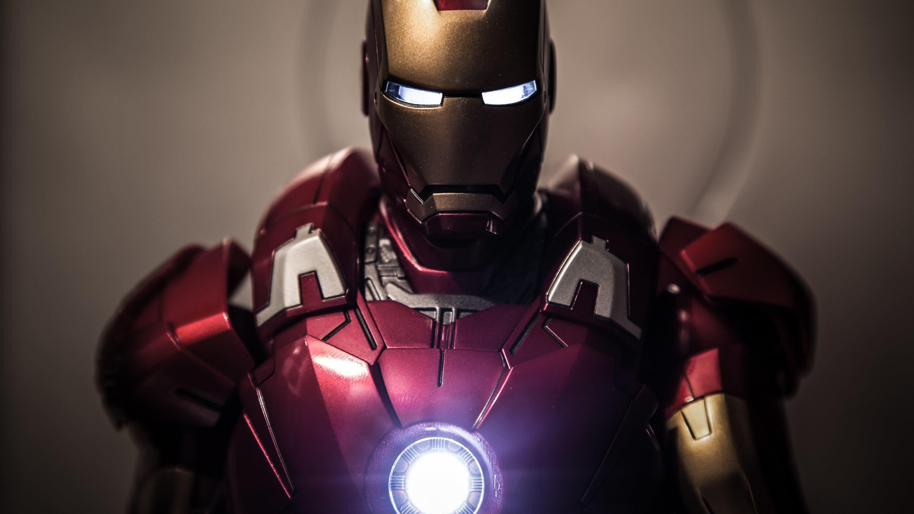

My name is Faiza Arooj and I am a 21 years old bachelors student.I belong from Kashmir but I live born in Taxila. I hold a cgpa of 3.92.
I aim to finish my degree with a good academic record and win a scholarship for my higher studies. I like learning about new techs and I want to just learn and explore new stuff.But I dont plan to work in indudtry as it demands networking and I am extremely poor at it. I'd just sit alone and learn things rather than connecting with people. It is definietly a weak point of mine but I am working on it and I hope to improve it in future.
I play table tennis and I am quite good at it.I started playing when I was in school but I am not very consistent.
I also read books ,currently I am reading a great book titled as "The courage to be disliked".
It is a great source of chracter development.
I like watching movies , to be more specific I like watching movies of superhero genre. I am a huge huge fan of Marvel movies. My favorite hero is Iron Man.My favourite ironman's movie has to be iromman 1. My second favoutite in MCU is an antihero Loki. I totally loved his journey of redemtion and I am eagerly waiting for the upcoming blockbuster of Mcu "Avengers Doomsday"
